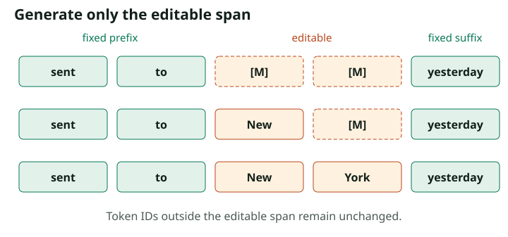

Conditioning, Infilling, and Guidance
Define the task as a conditional distribution
Write $c$ for observed context and $y$ for editable tokens. The target is $p_\theta(y\mid c)$. For prompt completion, $c$ is the prompt and $y$ the response. For infilling, $c$ includes tokens on both sides of a gap. The observed positions remain unchanged across the entire trajectory.
Let $E$ be the set of editable positions. Corrupt only those positions to create $x_t=(c,y_t)$. The conditional denoiser estimates $\Pr(Y_0^i=v\mid c,y_t,t)$ for $i\in E$. The same loss derivation as Part 2 applies to the conditional data distribution.
This formula averages examples equally after dividing by their editable lengths. A token-weighted dataset objective would instead aggregate target-token losses with the corresponding dataset-level normalization. Decide which objective you want; variable response lengths make the distinction consequential.
Supervised fine-tuning is denoising the answer
For a chat example, preserve the prompt and formatting tokens that are meant to be observed. Mask response content at sampled noise levels, predict the original response tokens at those positions, and apply loss only to masked response targets. LLaDA's supervised fine-tuning setup is an example of this conditional construction.
# editable is a Boolean [batch, length] response-position mask.
# valid excludes padding. Fixed context can still participate in attention.
eligible = editable & valid
t = torch.rand(x0.shape[0], 1, device=x0.device)
corrupt = (torch.rand(x0.shape, device=x0.device) < t) & eligible
xt = x0.masked_fill(corrupt, mask_id)
# Use the weighted masked loss, or sample a forced target from eligible.
# Do not shift labels by one: the target at i is the clean token at i.The snippet constructs inputs only; the forced-target estimator avoids zero-target batches and explicit inverse-time weights. Require at least one eligible token per example. When the model uses padding masks, ensure padded keys are excluded from attention as well as from loss.
Infilling uses evidence on both sides
Suppose the template is “The parcel was sent to [MASK] [MASK] yesterday.” Both the prefix and “yesterday” can inform the missing phrase. A full denoising transformer can use them in the same prediction step. An explicit editable-position mask makes the procedure precise:
- Tokenize the fixed context and allocate the editable slots.
- Initialize only the editable slots to the corruption symbol.
- Predict missing values using the full current sequence.
- Update only editable positions selected by the sampler.
- Verify that all fixed token IDs still equal their initial values.

For the ideal homogeneous absorbing process with an exact posterior denoiser, conditioning on visible tokens can be understood as conditioning the endpoint distribution on those observations. Real models may not have been trained on the specific infilling patterns you request. A model fine-tuned mostly on prefix-to-response chat need not be equally strong at arbitrary interior gaps.
A mask canvas is also a length assumption
Allocating $L$ output slots fixes a token-space canvas. It does not by itself model an arbitrary response length. Options include predicting or selecting a length, learning EOS and truncating after it, generating blocks until EOS, or using an insertion/deletion formulation. Each changes the task and possibly its probability model.
EOS treatment needs particular care when tokens appear out of order. An EOS proposal at an early position need not mean the prefix before it has finished denoising. Specify whether EOS is committed like an ordinary token, whether later positions remain active, and when the final string is truncated. Increasing the canvas length can alter the text, since the denoiser observes different positions and masks.
Word boundaries are not token boundaries. An infilling interface that promises a phrase of “two words” cannot implement that promise simply by allocating two tokenizer slots. For exact text preservation, verify tokenization at the boundaries and decode the final result before claiming that whitespace or punctuation stayed unchanged.
Hard conditioning and classifier-free guidance do different things
Hard conditioning clamps known values. Classifier-free guidance instead changes the relative preference for candidate tokens using conditional and unconditional predictions. One common categorical log-probability form is
$Z_i$ normalizes over vocabulary values. At $w=0$ this is the conditional prediction. Positive $w$ amplifies values that are more likely with the condition than without it. Some codebases use a scale $\gamma=1+w$, so their “guidance 1” corresponds to no extra guidance. Read the equation, not only the parameter name.
The unconditional branch must have a meaningful input convention established by training, such as dropped conditioning. Feeding an unfamiliar sequence of masks as an “unconditional prompt” does not guarantee a calibrated unconditional distribution. Use log-softmax for numerical stability, and account for the second branch when reporting model work.
Even with accurate local predictions, normalizing these guided categorical distributions at every step does not generally prove that the final sequence follows a globally normalized density $p(y\mid c)^{1+w}/p(y)^w$. Local guidance changes a trajectory distribution. Establishing an endpoint identity would require a separate argument. For the concrete guidance convention in one implementation, inspect LLaDA's generator.
A syntactic constraint must track what is actually known
For structured output, one can suppress tokens inconsistent with a constraint. But an arbitrary-order partial sequence is not necessarily a valid prefix, so a left-to-right grammar filter cannot always be reused unchanged. A closing bracket appearing before its matching opening bracket is not proof that the eventual sequence is invalid.
Use constraints that reason about partial assignments, select an order compatible with an existing parser, or generate candidate completions and validate the final object. Report whether failures are repaired, rejected, or resampled; these choices affect both quality statistics and latency.
Check your understanding: Does preserving a suffix guarantee that the completion satisfies its meaning?
No. Clamping guarantees those token IDs remain fixed. Semantic consistency is a learned capability and must be evaluated. It can fail even when the prompt-preservation invariant is perfect.
Measure the complete generation procedure
Continue to efficiency and evaluation, where block structure, caching, likelihood estimates, and sampling controls become part of an interpretable experiment.